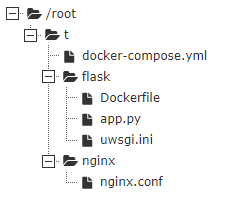
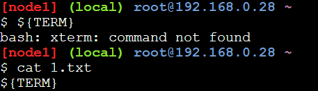
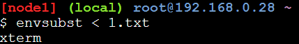

<!DOCTYPE html>
<html>
<head><meta name="generator" content="Hexo 3.8.0">
    <meta charset="utf-8">

    

    
    <title>nginx-flask | o1hy</title>
    
    <meta name="viewport" content="width=device-width, initial-scale=1, maximum-scale=1">
    
        <meta name="keywords" content="docker,flask,nginx">
    
    <meta name="description" content="一些思考什么时候会用到compose我有了这样的一个想法：我想创建两个镜像，一个安装nginx，另一个安装python(flask),然后使用这2个容器做web服务，但是我发现我不会写。所以我去查阅compose的各种资料。我发现常常遇到的例子都是，一个web服务器配上一个数据库的服务器。如下： 123456789101112131415161718192021222324252627versio">
<meta name="keywords" content="docker,flask,nginx">
<meta property="og:type" content="article">
<meta property="og:title" content="nginx-flask">
<meta property="og:url" content="https://17307.github.io/2018/10/28/nginx-flask/index.html">
<meta property="og:site_name" content="o1hy">
<meta property="og:description" content="一些思考什么时候会用到compose我有了这样的一个想法：我想创建两个镜像，一个安装nginx，另一个安装python(flask),然后使用这2个容器做web服务，但是我发现我不会写。所以我去查阅compose的各种资料。我发现常常遇到的例子都是，一个web服务器配上一个数据库的服务器。如下： 123456789101112131415161718192021222324252627versio">
<meta property="og:locale" content="en">
<meta property="og:image" content="http://h1.ioliu.cn/bing/MinnewankaBoathouse_ZH-CN0548323518_400x240.jpg">
<meta property="og:updated_time" content="2019-02-02T11:52:17.000Z">
<meta name="twitter:card" content="summary">
<meta name="twitter:title" content="nginx-flask">
<meta name="twitter:description" content="一些思考什么时候会用到compose我有了这样的一个想法：我想创建两个镜像，一个安装nginx，另一个安装python(flask),然后使用这2个容器做web服务，但是我发现我不会写。所以我去查阅compose的各种资料。我发现常常遇到的例子都是，一个web服务器配上一个数据库的服务器。如下： 123456789101112131415161718192021222324252627versio">
<meta name="twitter:image" content="http://h1.ioliu.cn/bing/MinnewankaBoathouse_ZH-CN0548323518_400x240.jpg">
    

    

    
        <link rel="icon" href="/css/images/github.png">
    

    <link rel="stylesheet" href="/libs/font-awesome/css/font-awesome.min.css">
    <link rel="stylesheet" href="/libs/titillium-web/styles.css">
    <link rel="stylesheet" href="/libs/source-code-pro/styles.css">

    <link rel="stylesheet" href="/css/style.css">

    <script src="/libs/jquery/3.3.1/jquery.min.js"></script>
    
    
        <link rel="stylesheet" href="/libs/lightgallery/css/lightgallery.min.css">
    
    
        <link rel="stylesheet" href="/libs/justified-gallery/justifiedGallery.min.css">
    
    
    


</head>
</html>
<body>
    <div id="wrap">
        <header id="header">
    <div id="header-outer" class="outer">
        <div class="container">
            <div class="container-inner">
                <div id="header-title">
                    <h1 class="logo-wrap">
                        <a href="/" class="logo"></a>
                    </h1>
                    
                </div>
                <div id="header-inner" class="nav-container">
                    <a id="main-nav-toggle" class="nav-icon fa fa-bars"></a>
                    <div class="nav-container-inner">
                        <ul id="main-nav">
                            
                                <li class="main-nav-list-item">
                                    <a class="main-nav-list-link" href="/">Home</a>
                                </li>
                            
                                        <ul class="main-nav-list"><li class="main-nav-list-item"><a class="main-nav-list-link" href="/categories/ML-DL/">ML&DL</a></li><li class="main-nav-list-item"><a class="main-nav-list-link" href="/categories/PT/">PT</a></li><li class="main-nav-list-item"><a class="main-nav-list-link" href="/categories/ctf/">ctf</a></li><li class="main-nav-list-item"><a class="main-nav-list-link" href="/categories/others/">others</a><ul class="main-nav-list-child"><li class="main-nav-list-item"><a class="main-nav-list-link" href="/categories/others/chrome/">chrome</a></li><li class="main-nav-list-item"><a class="main-nav-list-link" href="/categories/others/git/">git</a></li><li class="main-nav-list-item"><a class="main-nav-list-link" href="/categories/others/indego/">indego</a></li><li class="main-nav-list-item"><a class="main-nav-list-link" href="/categories/others/linux/">linux</a></li></ul></li><li class="main-nav-list-item"><a class="main-nav-list-link" href="/categories/papers/">papers</a></li><li class="main-nav-list-item"><a class="main-nav-list-link" href="/categories/python/">python</a></li><li class="main-nav-list-item"><a class="main-nav-list-link" href="/categories/web/">web</a><ul class="main-nav-list-child"><li class="main-nav-list-item"><a class="main-nav-list-link" href="/categories/web/db/">db</a></li><li class="main-nav-list-item"><a class="main-nav-list-link" href="/categories/web/docker/">docker</a></li><li class="main-nav-list-item"><a class="main-nav-list-link" href="/categories/web/flask/">flask</a></li><li class="main-nav-list-item"><a class="main-nav-list-link" href="/categories/web/nginx/">nginx</a></li><li class="main-nav-list-item"><a class="main-nav-list-link" href="/categories/web/php/">php</a></li></ul></li></ul>
                                    
                                <li class="main-nav-list-item">
                                    <a class="main-nav-list-link" href="/about/index.html">About</a>
                                </li>
                            
                        </ul>
                        <nav id="sub-nav">
                            <div id="search-form-wrap">

    <form class="search-form">
        <input type="text" class="ins-search-input search-form-input" placeholder="Search">
        <button type="submit" class="search-form-submit"></button>
    </form>
    <div class="ins-search">
    <div class="ins-search-mask"></div>
    <div class="ins-search-container">
        <div class="ins-input-wrapper">
            <input type="text" class="ins-search-input" placeholder="Type something...">
            <span class="ins-close ins-selectable"><i class="fa fa-times-circle"></i></span>
        </div>
        <div class="ins-section-wrapper">
            <div class="ins-section-container"></div>
        </div>
    </div>
</div>
<script>
(function (window) {
    var INSIGHT_CONFIG = {
        TRANSLATION: {
            POSTS: 'Posts',
            PAGES: 'Pages',
            CATEGORIES: 'Categories',
            TAGS: 'Tags',
            UNTITLED: '(Untitled)',
        },
        ROOT_URL: '/',
        CONTENT_URL: '/content.json',
    };
    window.INSIGHT_CONFIG = INSIGHT_CONFIG;
})(window);
</script>
<script src="/js/insight.js"></script>

</div>
                        </nav>
                    </div>
                </div>
            </div>
        </div>
    </div>
</header>
        <div class="container">
            <div class="main-body container-inner">
                <div class="main-body-inner">
                    <section id="main">
                        <div class="main-body-header">
    <h1 class="header">
    
    <a class="page-title-link" href="/categories/web/">web</a><i class="icon fa fa-angle-right"></i><a class="page-title-link" href="/categories/web/nginx/">nginx</a>
    </h1>
</div>

                        <div class="main-body-content">
                            <article id="post-nginx-flask" class="article article-single article-type-post" itemscope="" itemprop="blogPost">
    <div class="post-toc" id="post-toc">
    <strong class="post-toc-title">TOC</strong>
    <ol class="toc"><li class="toc-item toc-level-1"><a class="toc-link" href="#一些思考"><span class="toc-text">一些思考</span></a><ol class="toc-child"><li class="toc-item toc-level-2"><a class="toc-link" href="#什么时候会用到compose"><span class="toc-text">什么时候会用到compose</span></a></li></ol></li><li class="toc-item toc-level-1"><a class="toc-link" href="#实现"><span class="toc-text">实现</span></a><ol class="toc-child"><li class="toc-item toc-level-2"><a class="toc-link" href="#思路"><span class="toc-text">思路</span></a><ol class="toc-child"><li class="toc-item toc-level-3"><a class="toc-link" href="#方法一"><span class="toc-text">方法一</span></a></li><li class="toc-item toc-level-3"><a class="toc-link" href="#方法二"><span class="toc-text">方法二</span></a><ol class="toc-child"><li class="toc-item toc-level-4"><a class="toc-link" href="#工程目录"><span class="toc-text">工程目录</span></a></li><li class="toc-item toc-level-4"><a class="toc-link" href="#flask搭建"><span class="toc-text">flask搭建</span></a></li><li class="toc-item toc-level-4"><a class="toc-link" href="#nginx"><span class="toc-text">nginx</span></a></li><li class="toc-item toc-level-4"><a class="toc-link" href="#docker-compose-xml"><span class="toc-text">docker-compose.xml</span></a></li></ol></li></ol></li></ol></li></ol>
</div>

    <div class="article-inner">
        
            <header class="article-header">
                
    
        <h1 class="article-title" itemprop="name">
        nginx-flask
        </h1>
    

            </header>
        
        
            <div class="article-meta">
                
    <div class="article-date">
        <a href="/2018/10/28/nginx-flask/" class="article-date">
            <time datetime="2018-10-28T02:48:58.000Z" itemprop="datePublished">2018-10-28</time>
        </a>
    </div>

		

                
    <div class="article-tag">
        <i class="fa fa-tag"></i>
        <a class="tag-link" href="/tags/docker/">docker</a>, <a class="tag-link" href="/tags/flask/">flask</a>, <a class="tag-link" href="/tags/nginx/">nginx</a>
    </div>

                <span id="busuanzi_container_site_pv">
                    本站总访问量<span id="busuanzi_value_site_pv"></span>次
                </span>
                <span id="busuanzi_container_page_pv">
                    本文总阅读量<span id="busuanzi_value_page_pv"></span>次
                  </span>
            </div>
        
        
        <div class="article-entry" itemprop="articleBody">
            <h1 id="一些思考"><a href="#一些思考" class="headerlink" title="一些思考"></a>一些思考</h1><h2 id="什么时候会用到compose"><a href="#什么时候会用到compose" class="headerlink" title="什么时候会用到compose"></a>什么时候会用到compose</h2><p>我有了这样的一个想法：我想创建两个镜像，一个安装<code>nginx</code>，另一个安装<code>python(flask)</code>,然后使用这2个容器做<code>web</code>服务，但是我发现我不会写。所以我去查阅compose的各种资料。我发现常常遇到的例子都是，一个web服务器配上一个数据库的服务器。如下：</p>
<figure class="highlight plain"><table><tr><td class="gutter"><pre><span class="line">1</span><br><span class="line">2</span><br><span class="line">3</span><br><span class="line">4</span><br><span class="line">5</span><br><span class="line">6</span><br><span class="line">7</span><br><span class="line">8</span><br><span class="line">9</span><br><span class="line">10</span><br><span class="line">11</span><br><span class="line">12</span><br><span class="line">13</span><br><span class="line">14</span><br><span class="line">15</span><br><span class="line">16</span><br><span class="line">17</span><br><span class="line">18</span><br><span class="line">19</span><br><span class="line">20</span><br><span class="line">21</span><br><span class="line">22</span><br><span class="line">23</span><br><span class="line">24</span><br><span class="line">25</span><br><span class="line">26</span><br><span class="line">27</span><br></pre></td><td class="code"><pre><span class="line">version: &quot;3&quot;</span><br><span class="line">services:</span><br><span class="line"></span><br><span class="line">   db:</span><br><span class="line">     image: mysql:5.7</span><br><span class="line">     volumes:</span><br><span class="line">       - db_data:/var/lib/mysql</span><br><span class="line">     restart: always</span><br><span class="line">     environment:</span><br><span class="line">       MYSQL_ROOT_PASSWORD: somewordpress</span><br><span class="line">       MYSQL_DATABASE: wordpress</span><br><span class="line">       MYSQL_USER: wordpress</span><br><span class="line">       MYSQL_PASSWORD: wordpress</span><br><span class="line"></span><br><span class="line">   wordpress:</span><br><span class="line">     depends_on:</span><br><span class="line">       - db</span><br><span class="line">     image: wordpress:latest</span><br><span class="line">     ports:</span><br><span class="line">       - &quot;8000:80&quot;</span><br><span class="line">     restart: always</span><br><span class="line">     environment:</span><br><span class="line">       WORDPRESS_DB_HOST: db:3306</span><br><span class="line">       WORDPRESS_DB_USER: wordpress</span><br><span class="line">       WORDPRESS_DB_PASSWORD: wordpress</span><br><span class="line">volumes:</span><br><span class="line">  db_data:</span><br></pre></td></tr></table></figure>
<hr>
<p>在wordpress的environment中，指定了数据库为：<code>db：3306</code>，这个会被解析成db容器的<code>ip:3306</code>。出现上面的原因，是因为在<code>wordpress</code>容器中使用了<code>depends_on</code>，当然也可以使用<code>link</code>方法。<br>关于<code>depends_on</code>和<code>link</code>的大概为：通过打开端口，以及一些环境变量与另一个容器进行通信。  <strong>当然</strong>，除了上面两种方法，还可以用另一种方法，在下面将介绍到。</p>
<hr>
<p>所以，<code>nginx</code>与<code>flask</code>之间的结合，到底适不适合使用<code>docker-compose</code>通信。然而，我并没有找到这个问题的答案，那就先看看它到底能不能使用<code>docker-compose</code>通信吧。</p>
<h1 id="实现"><a href="#实现" class="headerlink" title="实现"></a>实现</h1><h2 id="思路"><a href="#思路" class="headerlink" title="思路"></a>思路</h2><ol>
<li>拖一个<code>python</code>的镜像，在<code>python</code>中安装相应的包：<code>flask</code>,<code>uwsgi</code>。然后配置好这些东西，通过<code>uwsgi</code>开启<code>flask</code>，监听端口<code>0.0.0.0:5000</code>。  </li>
<li>拖一个<code>nginx</code>的镜像，修改配置文件<code>nginx.conf</code>。在这里，最主要的地方就是如何在<code>proxy_pass</code>中，填入正确的 <code>flask</code>容器的<code>ip</code>。</li>
</ol>
<figure class="highlight plain"><table><tr><td class="gutter"><pre><span class="line">1</span><br><span class="line">2</span><br><span class="line">3</span><br><span class="line">4</span><br><span class="line">5</span><br><span class="line">6</span><br><span class="line">7</span><br><span class="line">8</span><br><span class="line">9</span><br><span class="line">10</span><br><span class="line">11</span><br><span class="line">12</span><br><span class="line">13</span><br></pre></td><td class="code"><pre><span class="line">#nginx.conf</span><br><span class="line">http &#123;</span><br><span class="line">    server &#123;</span><br><span class="line">        listen 80; </span><br><span class="line">        server_name 0.0.0.0; </span><br><span class="line">        location / &#123; </span><br><span class="line">            proxy_pass http://172.17.0.2:5000;</span><br><span class="line">        &#125;</span><br><span class="line">    &#125;</span><br><span class="line">&#125;</span><br><span class="line">events &#123;</span><br><span class="line">  worker_connections  1024;  ## Default: 1024</span><br><span class="line">&#125;</span><br></pre></td></tr></table></figure>
<h3 id="方法一"><a href="#方法一" class="headerlink" title="方法一"></a>方法一</h3><p>为了解决上面<strong>2</strong>中的问题，当然可以先启动<code>flask</code>的容器，然后通过命令获得次容器的<code>ip</code>。<br><figure class="highlight bash"><table><tr><td class="gutter"><pre><span class="line">1</span><br><span class="line">2</span><br><span class="line">3</span><br><span class="line">4</span><br><span class="line">5</span><br></pre></td><td class="code"><pre><span class="line">docker inspect &lt;id&gt; | grep IPAddre</span><br><span class="line"></span><br><span class="line">docker inspect --format <span class="string">'&#123;&#123; .NetworkSettings.IPAddress &#125;&#125;'</span> &lt;container-ID&gt; </span><br><span class="line"><span class="comment"># 查看所有容器ip</span></span><br><span class="line">docker inspect --format=<span class="string">'&#123;&#123;.NetworkSettings.IPAddress&#125;&#125;'</span> $(docker ps -a -q)</span><br></pre></td></tr></table></figure></p>
<p>获得上面的<code>ip</code>后，可以通过手工添加到上面的配置文件中。<br><strong>但是</strong>docker一个最大的优点就是自动化部署，如果通过这种方法，就显得太<strong>蠢</strong>了。</p>
<h3 id="方法二"><a href="#方法二" class="headerlink" title="方法二"></a>方法二</h3><p><strong>通过 docker-compose实现</strong></p>
<h4 id="工程目录"><a href="#工程目录" class="headerlink" title="工程目录"></a>工程目录</h4><p></p>
<h4 id="flask搭建"><a href="#flask搭建" class="headerlink" title="flask搭建"></a>flask搭建</h4><p><strong>Dockerfile</strong><br><figure class="highlight plain"><table><tr><td class="gutter"><pre><span class="line">1</span><br><span class="line">2</span><br><span class="line">3</span><br><span class="line">4</span><br><span class="line">5</span><br><span class="line">6</span><br><span class="line">7</span><br><span class="line">8</span><br><span class="line">9</span><br><span class="line">10</span><br></pre></td><td class="code"><pre><span class="line">FROM python:3</span><br><span class="line">RUN pip install uwsgi &amp;&amp;\</span><br><span class="line">    pip install flask &amp;&amp;\</span><br><span class="line">    mkdir /data</span><br><span class="line"></span><br><span class="line">EXPOSE 5000</span><br><span class="line">COPY ./app.py /data</span><br><span class="line">COPY ./uwsgi.ini /data</span><br><span class="line">WORKDIR /data</span><br><span class="line">CMD [&quot;uwsgi&quot;,&quot;uwsgi.ini&quot;]</span><br></pre></td></tr></table></figure></p>
<p><strong>app.py</strong><br><figure class="highlight python"><table><tr><td class="gutter"><pre><span class="line">1</span><br><span class="line">2</span><br><span class="line">3</span><br><span class="line">4</span><br><span class="line">5</span><br><span class="line">6</span><br><span class="line">7</span><br></pre></td><td class="code"><pre><span class="line"><span class="keyword">from</span> flask <span class="keyword">import</span> Flask</span><br><span class="line"></span><br><span class="line">app = Flask(__name__)</span><br><span class="line"></span><br><span class="line"><span class="meta">@app.route('/')</span></span><br><span class="line"><span class="function"><span class="keyword">def</span> <span class="title">index</span><span class="params">()</span>:</span></span><br><span class="line">    <span class="keyword">return</span> <span class="string">"&lt;span style='color:red'&gt;Hello World !&lt;/span&gt;"</span></span><br></pre></td></tr></table></figure></p>
<p><strong>uwsgi.ini</strong><br><figure class="highlight plain"><table><tr><td class="gutter"><pre><span class="line">1</span><br><span class="line">2</span><br><span class="line">3</span><br><span class="line">4</span><br><span class="line">5</span><br><span class="line">6</span><br><span class="line">7</span><br><span class="line">8</span><br><span class="line">9</span><br></pre></td><td class="code"><pre><span class="line">#uwsgi.ini</span><br><span class="line">[uwsgi]</span><br><span class="line">socket = 0.0.0.0:5000</span><br><span class="line">#protocol = http</span><br><span class="line">chdir = /data/</span><br><span class="line">wsgi-file = /data/app.py</span><br><span class="line">callable = app</span><br><span class="line">processes = 4</span><br><span class="line">threads = 2</span><br></pre></td></tr></table></figure></p>
<h4 id="nginx"><a href="#nginx" class="headerlink" title="nginx"></a>nginx</h4><p><strong>nginx.conf</strong><br><figure class="highlight plain"><table><tr><td class="gutter"><pre><span class="line">1</span><br><span class="line">2</span><br><span class="line">3</span><br><span class="line">4</span><br><span class="line">5</span><br><span class="line">6</span><br><span class="line">7</span><br><span class="line">8</span><br><span class="line">9</span><br><span class="line">10</span><br><span class="line">11</span><br><span class="line">12</span><br></pre></td><td class="code"><pre><span class="line">http &#123;</span><br><span class="line">    server &#123;</span><br><span class="line">        listen 80; </span><br><span class="line">        server_name 0.0.0.0; </span><br><span class="line">        location / &#123; </span><br><span class="line">            proxy_pass http://$&#123;TEST_PATH&#125;:5000;</span><br><span class="line">        &#125;</span><br><span class="line">    &#125;</span><br><span class="line">&#125;</span><br><span class="line">events &#123;</span><br><span class="line">  worker_connections  1024;  ## Default: 1024</span><br><span class="line">&#125;</span><br></pre></td></tr></table></figure></p>
<p>为了解决刚才提到的问题，可以看到，这里写的是 <strong><code>http://${TEST_PATH}:5000</code></strong>,其中的<code>${TEST_PATH}</code>是系统的环境变量。那么问题就是，如何取到这个环境变量了。下面将介绍。</p>
<h4 id="docker-compose-xml"><a href="#docker-compose-xml" class="headerlink" title="docker-compose.xml"></a>docker-compose.xml</h4><figure class="highlight plain"><table><tr><td class="gutter"><pre><span class="line">1</span><br><span class="line">2</span><br><span class="line">3</span><br><span class="line">4</span><br><span class="line">5</span><br><span class="line">6</span><br><span class="line">7</span><br><span class="line">8</span><br><span class="line">9</span><br><span class="line">10</span><br><span class="line">11</span><br><span class="line">12</span><br><span class="line">13</span><br><span class="line">14</span><br><span class="line">15</span><br><span class="line">16</span><br><span class="line">17</span><br><span class="line">18</span><br><span class="line">19</span><br><span class="line">20</span><br><span class="line">21</span><br></pre></td><td class="code"><pre><span class="line">version: &quot;3&quot;</span><br><span class="line">services:</span><br><span class="line"></span><br><span class="line">   flask:</span><br><span class="line">     build: ./flask/</span><br><span class="line">     restart: always</span><br><span class="line">     container_name: flask</span><br><span class="line">     </span><br><span class="line">   nginx:</span><br><span class="line">    image: nginx</span><br><span class="line">    # 或者</span><br><span class="line">    # link: flask</span><br><span class="line">    depends_on: flask</span><br><span class="line">    environment:</span><br><span class="line">        TEST_PATH : flask</span><br><span class="line">    container_name: nginx</span><br><span class="line">    ports:</span><br><span class="line">        - 80:80</span><br><span class="line">    volumes:</span><br><span class="line">        - /root/t/nginx/nginx.conf:/1.conf</span><br><span class="line">    command: /bin/bash -c &quot;envsubst &lt; /1.conf &gt; /etc/nginx/nginx.conf &amp;&amp; nginx -g &apos;daemon off;&apos;&quot;</span><br></pre></td></tr></table></figure>
<p>或者：<br><figure class="highlight plain"><table><tr><td class="gutter"><pre><span class="line">1</span><br><span class="line">2</span><br><span class="line">3</span><br><span class="line">4</span><br><span class="line">5</span><br><span class="line">6</span><br><span class="line">7</span><br><span class="line">8</span><br><span class="line">9</span><br><span class="line">10</span><br><span class="line">11</span><br><span class="line">12</span><br><span class="line">13</span><br><span class="line">14</span><br><span class="line">15</span><br><span class="line">16</span><br><span class="line">17</span><br><span class="line">18</span><br><span class="line">19</span><br><span class="line">20</span><br><span class="line">21</span><br><span class="line">22</span><br><span class="line">23</span><br><span class="line">24</span><br><span class="line">25</span><br><span class="line">26</span><br><span class="line">27</span><br></pre></td><td class="code"><pre><span class="line">version: &quot;3&quot;</span><br><span class="line">services:</span><br><span class="line"></span><br><span class="line">   flask:</span><br><span class="line">     build: ./flask/</span><br><span class="line">     restart: always</span><br><span class="line">     container_name: flask</span><br><span class="line">     networks:</span><br><span class="line">        - code-network</span><br><span class="line">     </span><br><span class="line">   nginx:</span><br><span class="line">    image: nginx</span><br><span class="line">    environment:</span><br><span class="line">        TEST_PATH : flask</span><br><span class="line">    container_name: nginx</span><br><span class="line">    ports:</span><br><span class="line">        - 80:80</span><br><span class="line">    volumes:</span><br><span class="line">        - /root/t/nginx/nginx.conf:/1.conf</span><br><span class="line">    networks:</span><br><span class="line">        - code-network</span><br><span class="line">        </span><br><span class="line">    command: /bin/bash -c &quot;envsubst &lt; /1.conf &gt; /etc/nginx/nginx.conf &amp;&amp; nginx -g &apos;daemon off;&apos;&quot;</span><br><span class="line">    </span><br><span class="line">networks:</span><br><span class="line">    code-network:</span><br><span class="line">        driver: bridge</span><br></pre></td></tr></table></figure></p>
<p>首先是<code>nginx</code>模块下的<code>depends_on</code>或<code>link</code>。<br>两者的作用都是可以将不同的容器加入到同一个网络,这样，就可以将<code>docker-compose.xml</code>文件中的<code>flask</code>识别为容器的ip  </p>
<p><strong>link</strong><br>在谋篇blog中看到了这样的描述：</p>
<blockquote>
<p>其实就是在容器中的/etc/hosts添加容器id和别名的映射</p>
</blockquote>
<p>但是在官网看到了这句话：</p>
<blockquote>
<p>One feature that user-defined networks do not support that you can do with –link is sharing environmental variables between containers. However, you can use other mechanisms such as volumes to share environment variables between containers in a more controlled way.</p>
</blockquote>
<p>所以<code>link</code>似乎还可共享变量。<br><strong>但是：</strong></p>
<blockquote>
<p>links provide a legacy interface to connect Docker containers running on the same host to each other without exposing the hosts’ network ports. Use the Docker networks feature instead</p>
</blockquote>
<p><strong>depends_on</strong><br>基本大部分的资料都是说解决<strong>依赖关系</strong>。但是我很好奇,当我在<code>docker-compose.xml</code>文件，没有加入<code>depends_on</code>时，<code>environment</code>中的<code>TEST_PATH</code>没有取到<code>flask</code>这个值。（这个值需要用到<code>network</code>来解决。）<br>所以我不知道，我这次的失败是因为启动顺序导致的，还是没有再同一个网络导致的，如果是由于同一个网络导致，那么<code>depends_on</code>看来也可起到与<code>link</code>相似的功能。<br><strong>总之</strong><br>少用<code>link</code>，多用<code>depends_on</code>与<code>net_work</code>。<br><strong>command</strong><br>解决上面网络问题后，就是<code>commond</code>的问题了。最一开始的问题是，如何再<code>nginx</code>的配置文件中，获得环境变量。<br><code>command: /bin/bash -c &quot;envsubst &lt; /1.conf &gt; /etc/nginx/nginx.conf &amp;&amp; nginx -g &#39;daemon off;&#39;&quot;</code><br>后面的<code>nginx -g &#39;daemon off&#39;</code>是开启<code>nginx</code>服务。那么前面呢？  </p>
<p><br>存在环境变量 <code>${TERM}</code> 为 <code>xterm</code>，有文件 1.txt 中内容是 <code>${TERM}</code><br><br>所以<code>envsubst &lt; /1.conf &gt; /etc/nginx/nginx.conf</code>的意思是，将 <code>/1.conf</code>中的环境变量替换，然后输入到 <code>/etc/nginx/nginx.conf</code>中。<br>如果需要指定特定的要替换的变量，可以用：<br><figure class="highlight plain"><table><tr><td class="gutter"><pre><span class="line">1</span><br></pre></td><td class="code"><pre><span class="line">envsubst &apos;$NGINX_HOST $NGINX_PORT $HOST_IP&apos; &lt; /1.conf &gt; /etc/nginx/nginx.conf</span><br></pre></td></tr></table></figure></p>

        </div>
        <footer class="article-footer">
            


    <a data-url="https://17307.github.io/2018/10/28/nginx-flask/" data-id="cjse950o5001dtwvlyty000xt" class="article-share-link"><i class="fa fa-share"></i>Share</a>
<script>
    (function ($) {
        $('body').on('click', function() {
            $('.article-share-box.on').removeClass('on');
        }).on('click', '.article-share-link', function(e) {
            e.stopPropagation();

            var $this = $(this),
                url = $this.attr('data-url'),
                encodedUrl = encodeURIComponent(url),
                id = 'article-share-box-' + $this.attr('data-id'),
                offset = $this.offset(),
                box;

            if ($('#' + id).length) {
                box = $('#' + id);

                if (box.hasClass('on')){
                    box.removeClass('on');
                    return;
                }
            } else {
                var html = [
                    '<div id="' + id + '" class="article-share-box">',
                        '<input class="article-share-input" value="' + url + '">',
                        '<div class="article-share-links">',
                            '<a href="https://twitter.com/intent/tweet?url=' + encodedUrl + '" class="article-share-twitter" target="_blank" title="Twitter"></a>',
                            '<a href="https://www.facebook.com/sharer.php?u=' + encodedUrl + '" class="article-share-facebook" target="_blank" title="Facebook"></a>',
                            '<a href="http://pinterest.com/pin/create/button/?url=' + encodedUrl + '" class="article-share-pinterest" target="_blank" title="Pinterest"></a>',
                            '<a href="https://plus.google.com/share?url=' + encodedUrl + '" class="article-share-google" target="_blank" title="Google+"></a>',
                        '</div>',
                    '</div>'
                ].join('');

              box = $(html);

              $('body').append(box);
            }

            $('.article-share-box.on').hide();

            box.css({
                top: offset.top + 25,
                left: offset.left
            }).addClass('on');

        }).on('click', '.article-share-box', function (e) {
            e.stopPropagation();
        }).on('click', '.article-share-box-input', function () {
            $(this).select();
        }).on('click', '.article-share-box-link', function (e) {
            e.preventDefault();
            e.stopPropagation();

            window.open(this.href, 'article-share-box-window-' + Date.now(), 'width=500,height=450');
        });
    })(jQuery);
</script>

        </footer>
    </div>
    <script type="application/ld+json">
    {
        "@context": "https://schema.org",
        "@type": "BlogPosting",
        "author": {
            "@type": "Person",
            "name": "o1hy"
        },
        "headline": "nginx-flask",
        "image": "https://17307.github.iohttp://h1.ioliu.cn/bing/MinnewankaBoathouse_ZH-CN0548323518_400x240.jpg",
        "keywords": "docker flask nginx",
        "genre": "web nginx",
        "datePublished": "2018-10-28",
        "dateCreated": "2018-10-28",
        "dateModified": "2019-02-02",
        "url": "https://17307.github.io/2018/10/28/nginx-flask/",
        "description": "一些思考什么时候会用到compose我有了这样的一个想法：我想创建两个镜像，一个安装nginx，另一个安装python(flask),然后使用这2个容器做web服务，但是我发现我不会写。所以我去查阅compose的各种资料。我发现常常遇到的例子都是，一个web服务器配上一个数据库的服务器。如下：
123456789101112131415161718192021222324252627versio"
        "wordCount": 1086
    }
</script>

</article>

    <section id="comments">
    
        
    <div id="disqus_thread">
        <noscript>Please enable JavaScript to view the <a href="//disqus.com/?ref_noscript">comments powered by Disqus.</a></noscript>
    </div>

    
    </section>


                        </div>
                    </section>
                    <aside id="sidebar">
    <a class="sidebar-toggle" title="Expand Sidebar"><i class="toggle icon"></i></a>
    <div class="sidebar-top">
        <p>follow:</p>
        <ul class="social-links">
            
                
                <li>
                    <a class="social-tooltip" title="github" href="https://github.com/17307" target="_blank" rel="noopener">
                        <i class="icon fa fa-github"></i>
                    </a>
                </li>
                
            
        </ul>
    </div>
    
        
<nav id="article-nav">
    
        <a href="/2018/10/28/Metadata/" id="article-nav-newer" class="article-nav-link-wrap">
        <strong class="article-nav-caption">newer</strong>
        <p class="article-nav-title">
        
            Identifying People by Metadata
        
        </p>
        <i class="icon fa fa-chevron-right" id="icon-chevron-right"></i>
    </a>
    
    
        <a href="/2018/10/28/docker/" id="article-nav-older" class="article-nav-link-wrap">
        <strong class="article-nav-caption">older</strong>
        <p class="article-nav-title">docker</p>
        <i class="icon fa fa-chevron-left" id="icon-chevron-left"></i>
        </a>
    
</nav>

    
    <div class="widgets-container">
        
            
                
    <div class="widget-wrap widget-list">
        <h3 class="widget-title">links</h3>
        <div class="widget">
            <ul>
                
                    <li>
                        <a href="https://das.scusec.org/">DAS</a>
                    </li>
                
                    <li>
                        <a href="https://www.sec-wiki.com/index.php">secWiKi</a>
                    </li>
                
                    <li>
                        <a href="https://prettymask.github.io/">prettymask</a>
                    </li>
                
                    <li>
                        <a href="https://herasu.github.io/">herasu</a>
                    </li>
                
            </ul>
        </div>
    </div>


            
                
    <div class="widget-wrap widget-list">
        <h3 class="widget-title">tags</h3>
        <div class="widget">
            <ul class="tag-list"><li class="tag-list-item"><a class="tag-list-link" href="/tags/chrome/">chrome</a><span class="tag-list-count">2</span></li><li class="tag-list-item"><a class="tag-list-link" href="/tags/ctf/">ctf</a><span class="tag-list-count">1</span></li><li class="tag-list-item"><a class="tag-list-link" href="/tags/docker/">docker</a><span class="tag-list-count">2</span></li><li class="tag-list-item"><a class="tag-list-link" href="/tags/flask/">flask</a><span class="tag-list-count">3</span></li><li class="tag-list-item"><a class="tag-list-link" href="/tags/linux/">linux</a><span class="tag-list-count">2</span></li><li class="tag-list-item"><a class="tag-list-link" href="/tags/md5碰撞/">md5碰撞</a><span class="tag-list-count">1</span></li><li class="tag-list-item"><a class="tag-list-link" href="/tags/metadata/">metadata</a><span class="tag-list-count">1</span></li><li class="tag-list-item"><a class="tag-list-link" href="/tags/nginx/">nginx</a><span class="tag-list-count">1</span></li><li class="tag-list-item"><a class="tag-list-link" href="/tags/php反序列化/">php反序列化</a><span class="tag-list-count">1</span></li><li class="tag-list-item"><a class="tag-list-link" href="/tags/sql/">sql</a><span class="tag-list-count">1</span></li><li class="tag-list-item"><a class="tag-list-link" href="/tags/sqlmap/">sqlmap</a><span class="tag-list-count">1</span></li><li class="tag-list-item"><a class="tag-list-link" href="/tags/sql注入/">sql注入</a><span class="tag-list-count">3</span></li><li class="tag-list-item"><a class="tag-list-link" href="/tags/文件包含/">文件包含</a><span class="tag-list-count">1</span></li><li class="tag-list-item"><a class="tag-list-link" href="/tags/流量包分析/">流量包分析</a><span class="tag-list-count">1</span></li><li class="tag-list-item"><a class="tag-list-link" href="/tags/爬虫/">爬虫</a><span class="tag-list-count">1</span></li></ul>
        </div>
    </div>


            
                
    <div class="widget-wrap widget-list">
        <h3 class="widget-title">archives</h3>
        <div class="widget">
            <ul class="archive-list"><li class="archive-list-item"><a class="archive-list-link" href="/archives/2019/02/">February 2019</a><span class="archive-list-count">3</span></li><li class="archive-list-item"><a class="archive-list-link" href="/archives/2018/11/">November 2018</a><span class="archive-list-count">1</span></li><li class="archive-list-item"><a class="archive-list-link" href="/archives/2018/10/">October 2018</a><span class="archive-list-count">6</span></li><li class="archive-list-item"><a class="archive-list-link" href="/archives/2018/09/">September 2018</a><span class="archive-list-count">12</span></li><li class="archive-list-item"><a class="archive-list-link" href="/archives/2018/08/">August 2018</a><span class="archive-list-count">11</span></li><li class="archive-list-item"><a class="archive-list-link" href="/archives/2018/06/">June 2018</a><span class="archive-list-count">3</span></li><li class="archive-list-item"><a class="archive-list-link" href="/archives/2017/09/">September 2017</a><span class="archive-list-count">1</span></li></ul>
        </div>
    </div>


            
        
    </div>
</aside>

                </div>
            </div>
        </div>
        <a id="back-to-top" onclick="goTop()"><i class="icon fa fa-angle-up"></i></a>
        <footer id="footer">
    <div class="container">
        <div class="container-inner">
            <div class="credit">
                <h1 class="logo-wrap">
                    <a href="/" class="logo"></a>
                </h1>
                <p>&copy; 2019 o1hy</p>
                <p>Powered by <a href="//hexo.io/" target="_blank">Hexo</a>. Theme by <a href="//github.com/ppoffice" target="_blank">PPOffice</a></p>
            </div>
            <div class="footer-plugins">
              
    


            </div>
        </div>
    </div>
    <script async src="//busuanzi.ibruce.info/busuanzi/2.3/busuanzi.pure.mini.js"></script>
</footer>

        
    
    <script>
    var disqus_shortname = '17307';
    
    
    var disqus_url = 'https://17307.github.io/2018/10/28/nginx-flask/';
    
    (function() {
    var dsq = document.createElement('script');
    dsq.type = 'text/javascript';
    dsq.async = true;
    dsq.src = '//' + disqus_shortname + '.disqus.com/embed.js';
    (document.getElementsByTagName('head')[0] || document.getElementsByTagName('body')[0]).appendChild(dsq);
    })();
    </script>


    
        <script src="/libs/lightgallery/js/lightgallery.min.js"></script>
        <script src="/libs/lightgallery/js/lg-thumbnail.min.js"></script>
        <script src="/libs/lightgallery/js/lg-pager.min.js"></script>
        <script src="/libs/lightgallery/js/lg-autoplay.min.js"></script>
        <script src="/libs/lightgallery/js/lg-fullscreen.min.js"></script>
        <script src="/libs/lightgallery/js/lg-zoom.min.js"></script>
        <script src="/libs/lightgallery/js/lg-hash.min.js"></script>
        <script src="/libs/lightgallery/js/lg-share.min.js"></script>
        <script src="/libs/lightgallery/js/lg-video.min.js"></script>
    
    
        <script src="/libs/justified-gallery/jquery.justifiedGallery.min.js"></script>
    
    
        <script type="text/x-mathjax-config">
            MathJax.Hub.Config({ tex2jax: { inlineMath: [['$','$'], ['\\(','\\)']] } });
        </script>
        <script src="https://cdnjs.cloudflare.com/ajax/libs/mathjax/2.7.1/MathJax.js?config=TeX-MML-AM_CHTML"></script>
    


<!-- Custom Scripts -->
<script src="/js/main.js"></script>

    </div>
<script src="/live2dw/lib/L2Dwidget.min.js?0c58a1486de42ac6cc1c59c7d98ae887"></script><script>L2Dwidget.init({"model":{"jsonPath":"/live2dw/assets/wanko.model.json"},"display":{"position":"left","width":150,"height":100,"hOffset":0,"vOffset":30},"mobile":{"show":false},"log":false,"pluginJsPath":"lib/","pluginModelPath":"assets/","pluginRootPath":"live2dw/","tagMode":false});</script></body>
</html>
<script>
    function goTop() {
        $('body, html').animate({ scrollTop: 0 }, 600);
    }
</script>
